Vattenfall RNN prediction¶
import pandas as pd
import matplotlib.pyplot as plt
import seaborn as sns
from pandas.plotting import register_matplotlib_converters
# plt.style.use(['science','no-latex'])
# plt.rcParams["font.family"] = "Times New Roman"
%load_ext autoreload
%autoreload 2
import tensorflow as tf
1, Load the data¶
#from tensorflow import keras
#from google.colab import drive
#drive.mount('/content/drive')
#df = pd.read_csv('/content/drive/MyDrive/Data/vattenfall_turbine.csv')
#drive.flush_and_unmount()
#print('NB: Unmount the google cloud driver')
df = pd.read_csv('vattenfall_turbine.csv')
keys = df.keys().values
feature_keys = keys[np.arange(1,5).tolist() + np.arange(7,10).tolist()]
time_key = keys[1]
---------------------------------------------------------------------------
FileNotFoundError Traceback (most recent call last)
~\AppData\Local\Temp/ipykernel_30208/2332029171.py in <module>
6 #print('NB: Unmount the google cloud driver')
7
----> 8 df = pd.read_csv('vattenfall_turbine.csv')
9 keys = df.keys().values
10 feature_keys = keys[np.arange(1,5).tolist() + np.arange(7,10).tolist()]
C:\Users\Public\programs\Anaconda3\lib\site-packages\pandas\util\_decorators.py in wrapper(*args, **kwargs)
309 stacklevel=stacklevel,
310 )
--> 311 return func(*args, **kwargs)
312
313 return wrapper
C:\Users\Public\programs\Anaconda3\lib\site-packages\pandas\io\parsers\readers.py in read_csv(filepath_or_buffer, sep, delimiter, header, names, index_col, usecols, squeeze, prefix, mangle_dupe_cols, dtype, engine, converters, true_values, false_values, skipinitialspace, skiprows, skipfooter, nrows, na_values, keep_default_na, na_filter, verbose, skip_blank_lines, parse_dates, infer_datetime_format, keep_date_col, date_parser, dayfirst, cache_dates, iterator, chunksize, compression, thousands, decimal, lineterminator, quotechar, quoting, doublequote, escapechar, comment, encoding, encoding_errors, dialect, error_bad_lines, warn_bad_lines, on_bad_lines, delim_whitespace, low_memory, memory_map, float_precision, storage_options)
584 kwds.update(kwds_defaults)
585
--> 586 return _read(filepath_or_buffer, kwds)
587
588
C:\Users\Public\programs\Anaconda3\lib\site-packages\pandas\io\parsers\readers.py in _read(filepath_or_buffer, kwds)
480
481 # Create the parser.
--> 482 parser = TextFileReader(filepath_or_buffer, **kwds)
483
484 if chunksize or iterator:
C:\Users\Public\programs\Anaconda3\lib\site-packages\pandas\io\parsers\readers.py in __init__(self, f, engine, **kwds)
809 self.options["has_index_names"] = kwds["has_index_names"]
810
--> 811 self._engine = self._make_engine(self.engine)
812
813 def close(self):
C:\Users\Public\programs\Anaconda3\lib\site-packages\pandas\io\parsers\readers.py in _make_engine(self, engine)
1038 )
1039 # error: Too many arguments for "ParserBase"
-> 1040 return mapping[engine](self.f, **self.options) # type: ignore[call-arg]
1041
1042 def _failover_to_python(self):
C:\Users\Public\programs\Anaconda3\lib\site-packages\pandas\io\parsers\c_parser_wrapper.py in __init__(self, src, **kwds)
49
50 # open handles
---> 51 self._open_handles(src, kwds)
52 assert self.handles is not None
53
C:\Users\Public\programs\Anaconda3\lib\site-packages\pandas\io\parsers\base_parser.py in _open_handles(self, src, kwds)
220 Let the readers open IOHandles after they are done with their potential raises.
221 """
--> 222 self.handles = get_handle(
223 src,
224 "r",
C:\Users\Public\programs\Anaconda3\lib\site-packages\pandas\io\common.py in get_handle(path_or_buf, mode, encoding, compression, memory_map, is_text, errors, storage_options)
699 if ioargs.encoding and "b" not in ioargs.mode:
700 # Encoding
--> 701 handle = open(
702 handle,
703 ioargs.mode,
FileNotFoundError: [Errno 2] No such file or directory: 'vattenfall_turbine.csv'
df[['time', 'guide_open']][0:10:2]
| time | guide_open | |
|---|---|---|
| 0 | 0.0004 | 0.897672 |
| 2 | 0.0012 | 0.882785 |
| 4 | 0.0020 | 0.897672 |
| 6 | 0.0028 | 0.841845 |
| 8 | 0.0036 | 0.860454 |
plot_cols = feature_keys[0:len(feature_keys):2]
plot_features = df[plot_cols]
#plot_features.index = df[time_key]
fig1 = plot_features.plot(subplots=True)
plot_features = df[plot_cols][int(len(df)/5):int(len(df)/3):1000]
#plot_features.index = df[time_key][:480]
fig2 = plot_features.plot(subplots=True)


plt.hist2d(df['guide_open'], df['pump101_speed'], bins=(50, 50), vmax=400)
plt.colorbar()
plt.xlabel('Guide open [degree')
plt.ylabel('Pump101 speed [rpm]')
ax = plt.gca()
ax.axis('tight')
plt.show()
plt.hist2d(df['pump101_speed'], df['pump102_speed'], bins=(50, 50), vmax=400)
plt.colorbar()
plt.xlabel('Pump101 speed [rpm]')
plt.ylabel('Pump102 speed [rpm]')
ax = plt.gca()
ax.axis('tight')
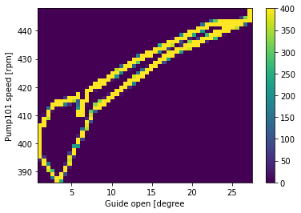
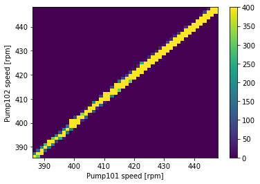
(386.21013, 447.92068600000005, 385.579537, 448.09854)
show_raw_visualization(df, df_data)
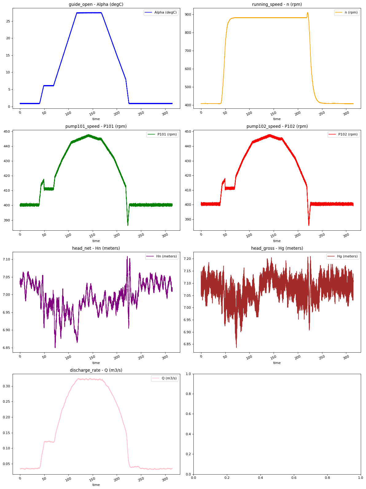
import seaborn as sns
sns.heatmap(df_data.corr(), annot=True, fmt=".2f")
plt.show()
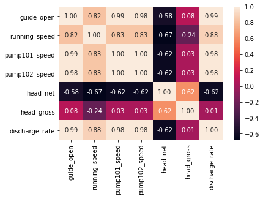
2, Preprocess the data (clean and split the data) for training and validation¶
2.1, be careful to select parameters in this procedure¶
feature_keys
input_keys = feature_keys[[0, 1, 2, 4, 6]]
output_key = feature_keys[0]
print(input_keys, output_key)
input_df = df[input_keys][0:len(df):100]
output_df = df[output_key][0:len(df):100]
# split the data into 70% for training, 20% for validation, and 10% for testing
n = len(df)
train_df = input_df[0:int(n*0.7)]
val_df = input_df[int(n*0.7):int(n*0.9)]
test_df = input_df[int(n*0.9):]
num_features = df.shape[1]
['guide_open' 'running_speed' 'pump101_speed' 'head_net' 'discharge_rate'] guide_open
from IPython.display import Markdown
display(Markdown('<span style="color:blue;font-size:50px">**Lets take a close look at the time series.**</span>'))
Lets take a close look at the time series.
2.2, normalize the data¶
train_mean = train_df.mean()
train_std = train_df.std()
train_df = (train_df - train_mean) / train_std
val_df = (val_df - train_mean) / train_std
test_df = (test_df - train_mean) / train_std
train_mean = train_df.mean()
train_std = train_df.std()
df_std = (train_df - train_mean) / train_std
df_std = df_std.melt(var_name='Column', value_name='Normalized')
plt.figure(figsize=(12, 6))
ax = sns.violinplot(x='Column', y='Normalized', data=df_std)
fig3 = ax.set_xticklabels(input_df.keys(), rotation=90)
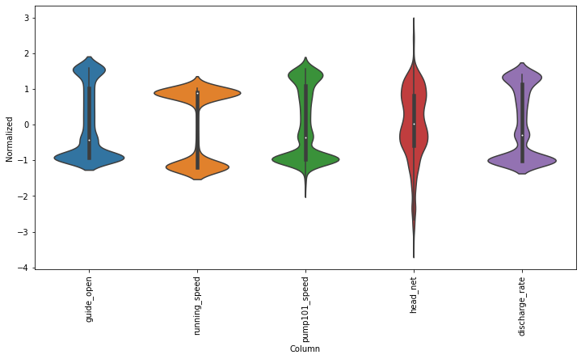
train_mean
guide_open 10.773071
running_speed 679.285443
pump101_speed 418.524643
head_net 6.992708
discharge_rate 0.155963
dtype: float64
2.3, index and offset for the model fitting (NB: important to adjust) ¶
class WindowGenerator():
def __init__(self, input_width, label_width, shift,
train_df=train_df, val_df=val_df, test_df=test_df,
label_columns=None):
# Store the raw data.
self.train_df = train_df
self.val_df = val_df
self.test_df = test_df
# Work out the label column indices.
self.label_columns = label_columns
if label_columns is not None:
self.label_columns_indices = {name: i for i, name in
enumerate(label_columns)}
self.column_indices = {name: i for i, name in
enumerate(train_df.columns)}
# Work out the window parameters.
self.input_width = input_width
self.label_width = label_width
self.shift = shift
self.total_window_size = input_width + shift
self.input_slice = slice(0, input_width)
self.input_indices = np.arange(self.total_window_size)[self.input_slice]
self.label_start = self.total_window_size - self.label_width
self.labels_slice = slice(self.label_start, None)
self.label_indices = np.arange(self.total_window_size)[self.labels_slice]
def __repr__(self):
return '\n'.join([
f'Total window size: {self.total_window_size}',
f'Input indices: {self.input_indices}',
f'Label indices: {self.label_indices}',
f'Label column name(s): {self.label_columns}'])
w1 = WindowGenerator(input_width=24, label_width=1, shift=24,
label_columns=['guide_open'])
w1
w2 = WindowGenerator(input_width=200, label_width=1, shift=1,
label_columns=['guide_open'])
w2
Total window size: 201
Input indices: [ 0 1 2 3 4 5 6 7 8 9 10 11 12 13 14 15 16 17
18 19 20 21 22 23 24 25 26 27 28 29 30 31 32 33 34 35
36 37 38 39 40 41 42 43 44 45 46 47 48 49 50 51 52 53
54 55 56 57 58 59 60 61 62 63 64 65 66 67 68 69 70 71
72 73 74 75 76 77 78 79 80 81 82 83 84 85 86 87 88 89
90 91 92 93 94 95 96 97 98 99 100 101 102 103 104 105 106 107
108 109 110 111 112 113 114 115 116 117 118 119 120 121 122 123 124 125
126 127 128 129 130 131 132 133 134 135 136 137 138 139 140 141 142 143
144 145 146 147 148 149 150 151 152 153 154 155 156 157 158 159 160 161
162 163 164 165 166 167 168 169 170 171 172 173 174 175 176 177 178 179
180 181 182 183 184 185 186 187 188 189 190 191 192 193 194 195 196 197
198 199]
Label indices: [200]
Label column name(s): ['guide_open']
def split_window(self, features):
inputs = features[:, self.input_slice, :]
labels = features[:, self.labels_slice, :]
if self.label_columns is not None:
labels = tf.stack(
[labels[:, :, self.column_indices[name]] for name in self.label_columns],
axis=-1)
# Slicing doesn't preserve static shape information, so set the shapes
# manually. This way the `tf.data.Datasets` are easier to inspect.
inputs.set_shape([None, self.input_width, None])
labels.set_shape([None, self.label_width, None])
return inputs, labels
WindowGenerator.split_window = split_window
# Stack three slices, the length of the total window.
example_window = tf.stack([np.array(train_df[:w2.total_window_size]),
np.array(train_df[100:100+w2.total_window_size]),
np.array(train_df[200:200+w2.total_window_size])])
example_inputs, example_labels = w2.split_window(example_window)
print('All shapes are: (batch, time, features)')
print(f'Window shape: {example_window.shape}')
print(f'Inputs shape: {example_inputs.shape}')
print(f'Labels shape: {example_labels.shape}')
All shapes are: (batch, time, features)
Window shape: (3, 201, 5)
Inputs shape: (3, 200, 5)
Labels shape: (3, 1, 1)
w2.example = example_inputs, example_labels
def plot(self, model=None, plot_col='guide_open', max_subplots=3):
inputs, labels = self.example
plt.figure(figsize=(12, 8))
plot_col_index = self.column_indices[plot_col]
max_n = min(max_subplots, len(inputs))
for n in range(max_n):
plt.subplot(max_n, 1, n+1)
plt.ylabel(f'{plot_col} [normed]')
plt.plot(self.input_indices, inputs[n, :, plot_col_index],
label='Inputs', marker='.', zorder=-10)
if self.label_columns:
label_col_index = self.label_columns_indices.get(plot_col, None)
else:
label_col_index = plot_col_index
if label_col_index is None:
continue
plt.scatter(self.label_indices, labels[n, :, label_col_index],
edgecolors='k', label='Labels', c='#2ca02c', s=64)
if model is not None:
predictions = model(inputs)
plt.scatter(self.label_indices, predictions[n, :, label_col_index],
marker='X', edgecolors='k', label='Predictions',
c='#ff7f0e', s=64)
if n == 0:
plt.legend()
plt.xlabel('Time [h]')
WindowGenerator.plot = plot
w2.plot()
w2.plot(plot_col='running_speed')
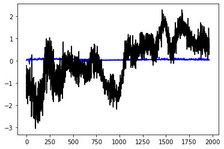
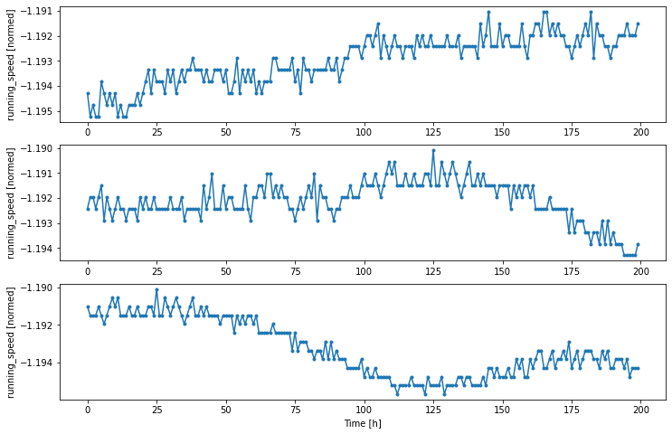
2.4, Create tf.data.Datasets¶
def make_dataset(self, data):
data = np.array(data, dtype=np.float32)
ds = tf.keras.preprocessing.timeseries_dataset_from_array(
data=data,
targets=None,
sequence_length=self.total_window_size,
sequence_stride=1,
shuffle=True,
batch_size=32,)
ds = ds.map(self.split_window)
return ds
WindowGenerator.make_dataset = make_dataset
@property
def train(self):
return self.make_dataset(self.train_df)
@property
def val(self):
return self.make_dataset(self.val_df)
@property
def test(self):
return self.make_dataset(self.test_df)
@property
def example(self):
"""Get and cache an example batch of `inputs, labels` for plotting."""
result = getattr(self, '_example', None)
if result is None:
# No example batch was found, so get one from the `.train` dataset
result = next(iter(self.train))
# And cache it for next time
self._example = result
return result
WindowGenerator.train = train
WindowGenerator.val = val
WindowGenerator.test = test
WindowGenerator.example = example
w2
Total window size: 201
Input indices: [ 0 1 2 3 4 5 6 7 8 9 10 11 12 13 14 15 16 17
18 19 20 21 22 23 24 25 26 27 28 29 30 31 32 33 34 35
36 37 38 39 40 41 42 43 44 45 46 47 48 49 50 51 52 53
54 55 56 57 58 59 60 61 62 63 64 65 66 67 68 69 70 71
72 73 74 75 76 77 78 79 80 81 82 83 84 85 86 87 88 89
90 91 92 93 94 95 96 97 98 99 100 101 102 103 104 105 106 107
108 109 110 111 112 113 114 115 116 117 118 119 120 121 122 123 124 125
126 127 128 129 130 131 132 133 134 135 136 137 138 139 140 141 142 143
144 145 146 147 148 149 150 151 152 153 154 155 156 157 158 159 160 161
162 163 164 165 166 167 168 169 170 171 172 173 174 175 176 177 178 179
180 181 182 183 184 185 186 187 188 189 190 191 192 193 194 195 196 197
198 199]
Label indices: [200]
Label column name(s): ['guide_open']
# Each element is an (inputs, label) pair.
w2.train.element_spec
(TensorSpec(shape=(None, 200, 5), dtype=tf.float32, name=None),
TensorSpec(shape=(None, 1, 1), dtype=tf.float32, name=None))
for example_inputs, example_labels in w2.train.take(1):
print(f'Inputs shape (batch, time, features): {example_inputs.shape}')
print(f'Labels shape (batch, time, features): {example_labels.shape}')
Inputs shape (batch, time, features): (32, 200, 5)
Labels shape (batch, time, features): (32, 1, 1)
single_step_window = WindowGenerator(
input_width=10, label_width=1, shift=1,
label_columns=['guide_open'])
single_step_window
Total window size: 11
Input indices: [0 1 2 3 4 5 6 7 8 9]
Label indices: [10]
Label column name(s): ['guide_open']
for example_inputs, example_labels in single_step_window.train.take(1):
print(f'Inputs shape (batch, time, features): {example_inputs.shape}')
print(f'Labels shape (batch, time, features): {example_labels.shape}')
Inputs shape (batch, time, features): (32, 1, 5)
Labels shape (batch, time, features): (32, 1, 1)
3, Baseline model¶
class Baseline(tf.keras.Model):
def __init__(self, label_index=None):
super().__init__()
self.label_index = label_index
def call(self, inputs):
if self.label_index is None:
return inputs
result = inputs[:, :, self.label_index]
return result[:, :, tf.newaxis]
column_indices['guide_open']
0
column_indices = {name: i for i, name in enumerate(input_df.columns)}
baseline = Baseline(label_index=column_indices['guide_open'])
baseline.compile(loss=tf.losses.MeanSquaredError(),
metrics=[tf.metrics.MeanAbsoluteError()])
val_performance = {}
performance = {}
val_performance['Baseline'] = baseline.evaluate(single_step_window.val)
performance['Baseline'] = baseline.evaluate(single_step_window.test, verbose=0)
---------------------------------------------------------------------------
ValueError Traceback (most recent call last)
<ipython-input-273-1f4c4828c646> in <module>
8 val_performance = {}
9 performance = {}
---> 10 val_performance['Baseline'] = baseline.evaluate(single_step_window.val)
11 performance['Baseline'] = baseline.evaluate(single_step_window.test, verbose=0)
<ipython-input-260-fa9c97d26d90> in val(self)
5 @property
6 def val(self):
----> 7 return self.make_dataset(self.val_df)
8
9 @property
<ipython-input-259-0863ffc3e807> in make_dataset(self, data)
1 def make_dataset(self, data):
2 data = np.array(data, dtype=np.float32)
----> 3 ds = tf.keras.preprocessing.timeseries_dataset_from_array(
4 data=data,
5 targets=None,
C:\Users\Public\programs\Anaconda3\lib\site-packages\tensorflow\python\keras\preprocessing\timeseries.py in timeseries_dataset_from_array(data, targets, sequence_length, sequence_stride, sampling_rate, batch_size, shuffle, seed, start_index, end_index)
140 # Validate strides
141 if sampling_rate <= 0 or sampling_rate >= len(data):
--> 142 raise ValueError(
143 'sampling_rate must be higher than 0 and lower than '
144 'the length of the data. Got: '
ValueError: sampling_rate must be higher than 0 and lower than the length of the data. Got: sampling_rate=1 for data of length 0.
NB: Following codes are using Keras tutorials not work for this case¶
split_fraction = 0.8
train_split = int(split_fraction * int(df_data.shape[0]))
step = 1000
past = 72000
future = 720
learning_rate = 0.001
batch_size = 256
epochs = 10
def normalize(data, train_split):
data_mean = data[:train_split].mean(axis=0)
data_std = data[:train_split].std(axis=0)
return (data - data_mean) / data_std
print(
"The selected parameters are:",
", ".join([titles[i] for i in range(7)]),
)
selected_features = [feature_keys[i] for i in range(7)]
features = df[selected_features]
features.index = df[date_time_key]
features.head()
features = normalize(features.values, train_split)
features = pd.DataFrame(features)
features.head()
train_data = features.loc[0 : train_split - 1]
val_data = features.loc[train_split:]
The selected parameters are: Alpha (degC), n (rpm), P101 (rpm), P102 (rpm), Hn (meters), Hg (meters), Q (m3/s)
print("Num GPUs Available: ", len(tf.config.list_physical_devices('CPU')))
Num GPUs Available: 1
2.2, Processing datasets for training and validation¶
# Training dataset
start = past + future
end = start + train_split
x_train = train_data[[i for i in range(7)]].values
y_train = features.iloc[start:end][[1]]
sequence_length = int(past / step)
x_train.shape, y_train.shape
((629144, 7), (629144, 1))
from tensorflow import keras
dataset_train = keras.preprocessing.timeseries_dataset_from_array(
x_train,
y_train,
sequence_length=sequence_length,
sampling_rate=step,
batch_size=batch_size,
)
# Validation dataset
x_end = len(val_data) - past - future
label_start = train_split + past + future
x_val = val_data.iloc[:x_end][[i for i in range(7)]].values
y_val = features.iloc[label_start:][[1]]
dataset_val = keras.preprocessing.timeseries_dataset_from_array(
x_val,
y_val,
sequence_length=sequence_length,
sampling_rate=step,
batch_size=batch_size,
)
for batch in dataset_train.take(1):
inputs, targets = batch
print("Input shape:", inputs.numpy().shape)
print("Target shape:", targets.numpy().shape)
Input shape: (256, 72, 7)
Target shape: (256, 1)
3, Training start…..¶
inputs = keras.layers.Input(shape=(inputs.shape[1], inputs.shape[2]))
lstm_out = keras.layers.LSTM(32)(inputs)
outputs = keras.layers.Dense(1)(lstm_out)
model = keras.Model(inputs=inputs, outputs=outputs)
model.compile(optimizer=keras.optimizers.Adam(learning_rate=learning_rate), loss="mse")
model.summary()
Model: "functional_1"
_________________________________________________________________
Layer (type) Output Shape Param #
=================================================================
input_1 (InputLayer) [(None, 72, 7)] 0
_________________________________________________________________
lstm (LSTM) (None, 32) 5120
_________________________________________________________________
dense (Dense) (None, 1) 33
=================================================================
Total params: 5,153
Trainable params: 5,153
Non-trainable params: 0
_________________________________________________________________
epochs = 2
path_checkpoint = "model_checkpoint.h5"
es_callback = keras.callbacks.EarlyStopping(monitor="val_loss", min_delta=0, patience=5)
modelckpt_callback = keras.callbacks.ModelCheckpoint(
monitor="val_loss",
filepath=path_checkpoint,
verbose=1,
save_weights_only=True,
save_best_only=True,
)
history = model.fit(
dataset_train,
epochs=epochs,
validation_data=dataset_val,
callbacks=[es_callback, modelckpt_callback],
)
Epoch 1/2
2177/2177 [==============================] - ETA: 0s - loss: 0.0055
Epoch 00001: val_loss improved from inf to 0.00411, saving model to model_checkpoint.h5
2177/2177 [==============================] - 92s 42ms/step - loss: 0.0055 - val_loss: 0.0041
Epoch 2/2
2176/2177 [============================>.] - ETA: 0s - loss: 2.1945e-04
Epoch 00002: val_loss improved from 0.00411 to 0.00265, saving model to model_checkpoint.h5
2177/2177 [==============================] - 95s 44ms/step - loss: 2.1941e-04 - val_loss: 0.0027
Visualize the loss function from the learning
def visualize_loss(history, title):
loss = history.history["loss"]
val_loss = history.history["val_loss"]
epochs = range(len(loss))
plt.figure()
plt.plot(epochs, loss, "b", label="Training loss")
plt.plot(epochs, val_loss, "r", label="Validation loss")
plt.title(title)
plt.xlabel("Epochs")
plt.ylabel("Loss")
plt.legend()
plt.show()
visualize_loss(history, "Training and Validation Loss")
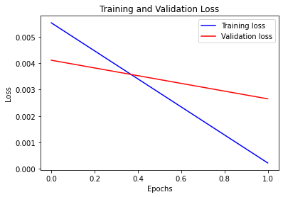
Prediction using the trained model
def show_plot(plot_data, delta, title):
labels = ["History", "True Future", "Model Prediction"]
marker = [".-", "rx", "go"]
time_steps = list(range(-(plot_data[0].shape[0]), 0))
if delta:
future = delta
else:
future = 0
plt.title(title)
for i, val in enumerate(plot_data):
if i:
plt.plot(future, plot_data[i], marker[i], markersize=10, label=labels[i])
else:
plt.plot(time_steps, plot_data[i].flatten(), marker[i], label=labels[i])
plt.legend()
plt.xlim([time_steps[0], (future + 5) * 2])
plt.xlabel("Time-Step")
plt.show()
return
for x, y in dataset_val.take(5):
show_plot(
[x[1][:, 1].numpy(), y[1].numpy(), model.predict(x)[1]],
12,
"Single Step Prediction",
)
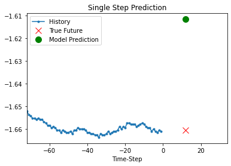
 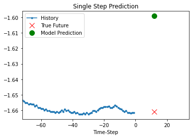
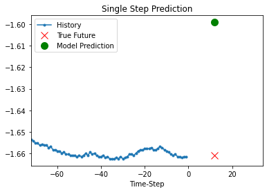
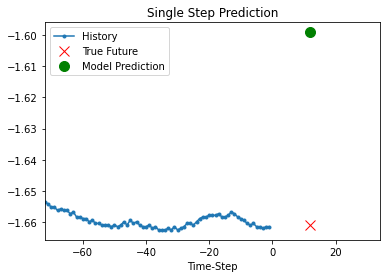